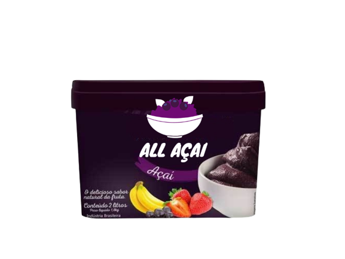
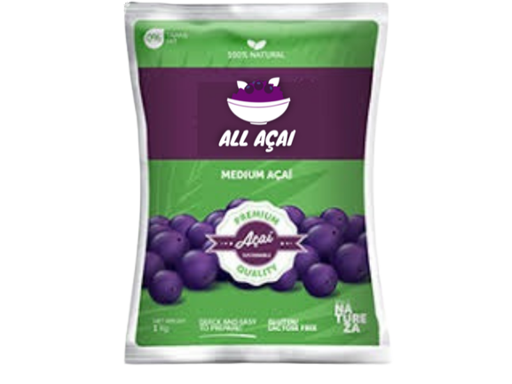
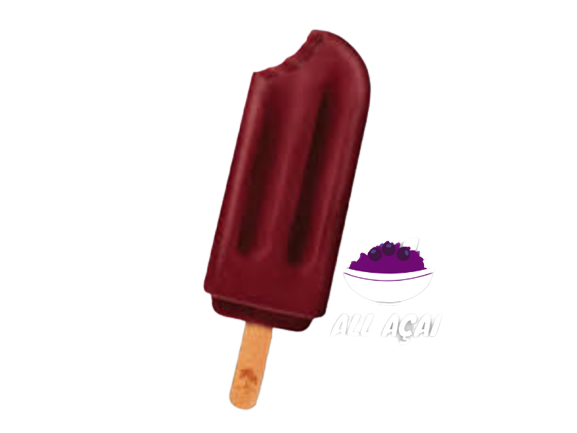

Somos uma empresa criada no ano de 2019, na cidade de Sete lagoas, no Estado de Minas Gerais. Hoje nossa fábrica ocupa uma área aproximada de 5 mil m².
Missão
Entregar para todo o Brasil produtos saborosos, de qualidade e sustentáveis, garantindo para todos os nossos clientes a satifasção e além de contribuir para o meio ambiente. Reconhecer o talendo de nossos funcionários e proporcionar crescimentos em suas vidas.
Visão
Ser referência nacional de produtos a base de açaí para comerciantes e varejistas.
Valores
Respeito
Qualidade
Trabalho compartilhado e ético
Paixão pelo o que fazemos

Pote de creme de açaí, o melhor creme de acaí do Brasil. Temos açaí tradicional, açaí com polpa de banana, açaí com polpa de morango e açaí com guaraná.
Temos pote de 1 litro, 2 litros e 5 litro.
Vendas acima de 30 unidades
Linha polpa de açai fino, polpa de 100g.
Vendas apenas acima de 100 unidades.

Nossa linha premiun de polpa de açaí.
Temos polpa de 500g, 1kg e 2kg.
Vendas acima de 50 unidades.

Deliciosos picolé de açaí, o mais saboroso picolé de açaí do Brasil.
Temos açaí tradicional, açaí com polpa de banana, açaí com polpa de morango e açaí com guaraná.